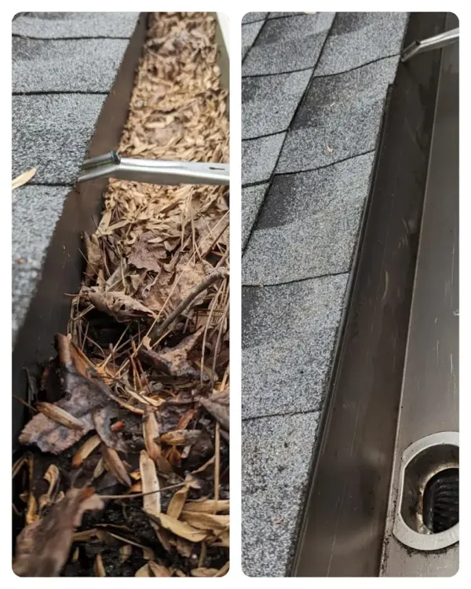

Gutter Cleaning Cartersville GA
When gutters get clogged, water has nowhere to go. It spills over the edge and runs down your roof, walls, and foundation. Over time, that causes real damage.
We clear out every part of your gutters and downspouts by hand, so water flows the way it should. Storms roll through North Georgia often — we make sure your home is ready for them.
Trusted Gutter Cleaning Cartersville
With over five years of experience, Gutter Cleaning Cartersville protects your home from water damage through expert gutter and downspout maintenance. Every job includes hand-cleaning, downspout flushing, and a complete system inspection to ensure proper drainage.
- Call us for a quick quote.
- We clean, flush, and inspect your gutters.
- We clean up completely and share photos.

Gutter Cleaning Services in Cartersville, GA
Every job includes a full check of your gutters and downspouts, so nothing gets missed. We clear each section, not just what shows from the ground. The visit ends with the flow tested, so water actually moves the way it should. If we spot damage along the way, we point it out, though repairs themselves are not something we take on.

Gutter Guard Installation
Keep leaves, pine needles, and debris out of your gutters permanently. We install durable, premium mesh gutter guards that prevent blockages and protect your home.
Learn More →
Downspout Cleaning
A clean gutter still backs up if the downspout is blocked. We check each one and clear it, so water actually leaves your roof instead of sitting in the trough.
How Often Should Gutters Be Cleaned in Cartersville, GA?
Most homes need cleaning twice a year. Oak leaves drop heavy from October through December, and pine needles build up again from March through May near Pine Mountain and Lake Allatoona. Homes with thick tree cover may need a third cleaning during peak pine season. Skipping a season lets debris pack down, which slows drainage and adds time to the next visit.
How Long Does Professional Gutter Cleaning Take?
A standard home takes about 1 to 2 hours from start to finish. Homes with heavy debris, multiple stories, or clogged downspouts can run longer. We clear each section by hand, then check the flow before we call the job done, so the time reflects the actual condition of your gutters, not a fixed rate.
Do Pine Needles Clog Gutters Worse Than Leaves?
Yes. Pine needles interlock and pack tightly, which makes them harder to remove than flat leaves. Homes near Pine Mountain and Lake Allatoona see this buildup most, often needing a cleaning in spring, ahead of the usual fall service. Leaves from oak and maple trees, common in older Cartersville neighborhoods, tend to clear more easily but arrive in heavier volume each fall.
Our Gutter Cleaning Process
Clear the Debris
We work section by section, clearing debris by hand from every part of your gutter system, not just what's visible from the ground.
Check the Downspouts
Downspouts often get skipped by crews in a hurry. We check every one and clear what's stuck inside, so water has somewhere to go once it reaches the bottom.
Confirm the Flow
Once the debris is cleared, we run water through the system to confirm it drains the way it should, and flag anything else we find along the way, like a loose bracket or a small leak.
Why Homeowners Choose Us:
- On Time, Every Visit — We show up when we say we will. No waiting around, no rescheduled visits without notice.
- Friendly, Respectful Staff — We knock, introduce ourselves, and ask before moving anything in your yard, patio furniture, potted plants, or a parked car in the way.
- Full Property Care — We treat your yard and landscaping with care, staying off flower beds and delicate areas as we work.
- Clear Communication — You know what we found and what we did before we leave. No guessing, no surprise charges.
- Careful, Detailed Work — We check every section of the gutter system. Small issues get flagged before they turn into bigger ones.
Is Professional Gutter Cleaning Worth It?
Yes, for most homeowners. A missed cleaning can lead to water damage, rot, and repair costs well beyond what a cleaning would have cost. The time and risk of doing it yourself, especially on a two-story home, is often worth handing off.
Why Cartersville's Older and Newer Homes Clog Differently
Homes near Old Town and Waterford often have mature trees overhead and older, more detailed rooflines. In many cases, that means more valleys and joints where debris settles, slowing water until it backs up over the edge. Homes built more recently toward the Emerson corridor tend to have simpler rooflines, but many were fitted with smaller, builder-grade gutters and downspouts spaced too far apart to handle Cartersville's rainfall, which totals close to 48 to 51 inches a year. That gap between rainfall and gutter capacity means less debris is needed before water starts spilling over.
We see both patterns often enough to check for them by default, not just when something looks wrong. A gutter clogged by tree litter needs a full hand clearing. A gutter overflowing from spacing or capacity needs the flow itself tested. That is why we inspect before we clean, not after, so the fix actually matches the problem.
The Complete Guide to Gutter Cleaning in Cartersville, GA
Why Gutters Clog Fast in Cartersville
Oak leaves fill Cartersville gutters heaviest in October and November, while pine needles cause the same trouble starting in March near Pine Mountain and Lake Allatoona, packing tighter than flat leaves. Rain falls close to 131 days a year here, according to NOAA climate data, so a gutter that's already slowed rarely gets the chance to dry out before the next storm adds to it.
What Happens When Gutters Are Left Clogged
A clogged gutter sends water over the edge instead of down the downspout, and that water works under the roofline and pools near the foundation. Left long enough, this leads to fascia rot, stained exterior walls, and standing water that draws mosquitoes.
How Local Storms Put Extra Strain on Gutters
Hurricane Helene flooded parts of Cartersville in 2024, closing Bruce Street and the Jones Mill tunnel, according to city storm reports. In March 2021, the National Weather Service confirmed an EF-1 tornado uprooted trees onto homes along Oakridge Drive, the kind of sudden debris load a normal season rarely brings at once.
Gutter Guards: What They Do and Don't Do
Gutter guards cut down on debris, they do not stop it completely. Fine grit and pine needles still work through most guard types over time, so a guarded gutter still needs periodic attention, just less often than one without guards.
DIY vs. Professional Gutter Cleaning
Ladder falls are a common cause of injury during DIY gutter cleaning, and that risk rises further on the multi-story homes common in Cartersville's newer subdivisions. A professional also knows what hidden damage, like a sagging section or a worn seam, looks like once the debris is cleared.
What Affects the Time and Cost of a Cleaning
Most gutter cleanings take 1 to 3 hours, depending on roof size, number of stories, how much debris has built up, and whether gutter guards are in the way. Homes cleaned on a regular schedule take less time than ones left untouched for a year.
Gutter cleaning in Cartersville, GA usually costs $125 to $300. Price and time both depend on your home's size and condition.
What Should You Look for Before Hiring a Gutter Cleaner in Cartersville?
Look for on-time service, a crew that checks the whole gutter, not just the middle stretch, and clear answers about what they found. Ask if they check downspouts too, since a clogged downspout backs up water even after a clean gutter.
When to Clean Your Gutters in Cartersville
October–November (Peak Leaf Season)
Debris drop hits hardest here, and homes with mature trees overhead fill faster than newer builds nearby. Leaves settle into the downspout opening before the trough itself even looks full, which is why overflow often starts before a gutter appears clogged. This is the busiest stretch of the year for cleaning calls, and booking early keeps a home off a waiting list before the holidays.
December–February (Freeze Risk)
Cleaning calls slow down here, but a gutter left full going into a hard freeze is the riskiest setup of the year. Trapped water can freeze along the roofline, and the added weight pulls at brackets never built to hold ice. This is why a fall cleaning matters more than a winter one, prevention beats repair once temperatures drop.
March–May (Storm Season)
Debris that survived winter, broken twigs, waterlogged leaves, combines with new spring growth, doubling the load a gutter has to handle. Spring storms test that load directly, and a system already slowed by winter debris overflows faster once heavy rain hits. This is the second busiest season of the year, right behind fall.
June–September (Preventive Window)
Demand eases here since debris drop slows down, but a strong summer storm can still fill a clear gutter overnight. This stretch is actually the best window for a mid-year check, catching a loose bracket or a sagging section before fall's heavier load arrives. Waiting until leaves are already falling to find a problem leaves less time to fix it before winter.
Proudly Serving Cartersville Neighborhoods
Frequently Asked Questions
Do I need to be home during the gutter cleaning service?
No. Gutter cleaning is exterior work, so most customers do not need to be home. We can complete the job and let you know once it is done.
What happens if you find damage while cleaning?
We flag it and let you know before we finish the job. Repairs are not something we take on, but you will know exactly what we found, a bent hanger, a soft spot, or anything else, so you can decide what to do next.
How do I know the job was actually done right?
Every gutter gets tested with water once the debris is cleared, so we can watch it empty out before we call the job finished. If something still looks off, we fix it before we leave.
Do you clean gutters in Oakland Heights and Atco?
Yes. We work in both neighborhoods, along with the rest of Cartersville.
Do you clean gutters on two-story homes?
Yes. We bring the right ladder setup for two-story and taller homes, common in the newer parts of Cartersville.